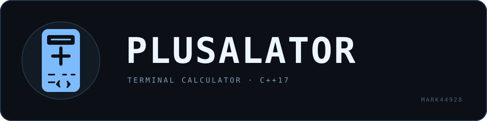
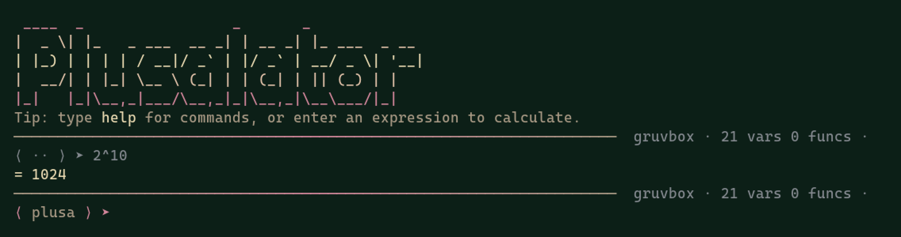

← Family hub

Calculator · C++17 · zero dependencies
Plusalator
A calculator that lives in the terminal. Expression parsing, memory slots, ASCII plots, 20 themes and a clean JSON mode for scripts.
git clone https://github.com/Mark44928/Plusalator.git
cd Plusalator && make && ./plusalator

- Qalculate flavorpercent, implicit multiplication, functions
- 20 themestruecolor palettes, live prompt
- 190 checksnumeric, fuzz and REPL coverage
- Script mode
--eval and --json